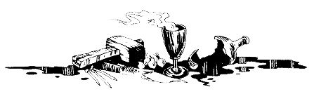

Le couloir s'élargit et aboutit à une bifurcation. A gauche s'ouvre un corridor, dans lequel deux portes se font face. Vous pouvez emprunter ce passage, mais vous pouvez également prendre le corridor sur votre droite. 